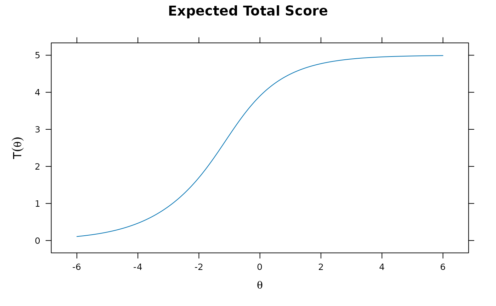

Initializes the proper S4 class and methods necessary for mirt
functions to use in estimation. To use the defined objects pass to the
mirt(..., customItems = list()) command, and
ensure that the classes are properly labelled and unique in the list.
Additionally, the input mirt(..., customItemsData = list()) can
also be included to specify additional item-level information to better
recycle custom-item definitions (e.g., for supplying varying
Q-matrices), where the list input must have the same length as the
number of items. For further examples regarding how this function can be
used for fitting unfolding-type models see Liu and Chalmers (2018).
Usage
createItem(
name,
par,
est,
P,
gr = NULL,
hss = NULL,
gen = NULL,
lbound = NULL,
ubound = NULL,
derivType = "Richardson",
derivType.hss = "Richardson",
bytecompile = TRUE
)Arguments
- name
a character indicating the item class name to be defined
- par
a named vector of the starting values for the parameters
- est
a logical vector indicating which parameters should be freely estimated by default
- P
the probability trace function for all categories (first column is category 1, second category two, etc). First input contains a vector of all the item parameters, the second input must be a matrix called
Theta, the third input must be the number of categories calledncat, and (optionally) a fourth argument termeditemdatamay be included containing further users specification information. The last optional input is to be utilized within the estimation functions such asmirtvia the list inputcustomItemsDatato more naturally recycle custom-item definitions. Therefore, these inputs must be of the formfunction(par, Theta, ncat){...}or
function(par, Theta, ncat, itemdata){...}to be valid; however, the names of the arguements is not relavent.
Finally, this function must return a
matrixobject of category probabilities, where the columns represent each respective category- gr
gradient function (vector of first derivatives) of the log-likelihood used in estimation. The function must be of the form
gr(x, Theta), wherexis the object defined bycreateItem()andThetais a matrix of latent trait parameters. Tabulated (EM) or raw (MHRM) data are located in thex@datslot, and are used to form the complete data log-likelihood. If not specified a numeric approximation will be used- hss
Hessian function (matrix of second derivatives) of the log-likelihood used in estimation. If not specified a numeric approximation will be used (required for the MH-RM algorithm only). The input is identical to the
grargument- gen
a function used when
GenRandomPars = TRUEis passed to the estimation function to generate random starting values. Function must be of the formfunction(object) ...and must return a vector with properties equivalent to theparobject. If NULL, parameters will remain at the defined starting values by default- lbound
optional vector indicating the lower bounds of the parameters. If not specified then the bounds will be set to -Inf
- ubound
optional vector indicating the lower bounds of the parameters. If not specified then the bounds will be set to Inf
- derivType
if the
grterm is not specified this type will be used to obtain the gradient numerically or symbolically. Default is the 'Richardson' extrapolation method; seenumerical_derivfor details and other options. If'symbolic'is supplied then the gradient will be computed using a symbolical approach (potentially the most accurate method, though may fail depending on how thePfunction was defined)- derivType.hss
if the
hssterm is not specified this type will be used to obtain the Hessian numerically. Default is the 'Richardson' extrapolation method; seenumerical_derivfor details and other options. If'symbolic'is supplied then the Hessian will be computed using a symbolical approach (potentially the most accurate method, though may fail depending on how thePfunction was defined)- bytecompile
logical; where applicable, byte compile the functions provided? Default is
TRUEto provide
Details
The summary() function will not return proper standardized loadings
since the function is not sure how to handle them (no slopes could be
defined at all!). Instead loadings of .001 are filled in as place-holders.
References
Chalmers, R., P. (2012). mirt: A Multidimensional Item Response Theory Package for the R Environment. Journal of Statistical Software, 48(6), 1-29. doi:10.18637/jss.v048.i06
Liu, C.-W. and Chalmers, R. P. (2018). Fitting item response unfolding models to Likert-scale data using mirt in R. PLoS ONE, 13, 5. doi:10.1371/journal.pone.0196292
Author
Phil Chalmers rphilip.chalmers@gmail.com
Examples
# \donttest{
name <- 'old2PL'
par <- c(a = .5, b = -2)
est <- c(TRUE, TRUE)
P.old2PL <- function(par,Theta, ncat){
a <- par[1]
b <- par[2]
P1 <- 1 / (1 + exp(-1*a*(Theta - b)))
cbind(1-P1, P1)
}
x <- createItem(name, par=par, est=est, P=P.old2PL)
# So, let's estimate it!
dat <- expand.table(LSAT7)
sv <- mirt(dat, 1, c(rep('2PL',4), 'old2PL'), customItems=list(old2PL=x), pars = 'values')
tail(sv) #looks good
#> group item class name parnum value lbound ubound est const nconst
#> 15 all Item.4 dich g 15 0.0 0 1 FALSE none none
#> 16 all Item.4 dich u 16 1.0 0 1 FALSE none none
#> 17 all Item.5 custom a 17 0.5 -Inf Inf TRUE none none
#> 18 all Item.5 custom b 18 -2.0 -Inf Inf TRUE none none
#> 19 all GROUP GroupPars MEAN_1 19 0.0 -Inf Inf FALSE none none
#> 20 all GROUP GroupPars COV_11 20 1.0 0 Inf FALSE none none
#> prior.type prior_1 prior_2
#> 15 none NaN NaN
#> 16 none NaN NaN
#> 17 none NaN NaN
#> 18 none NaN NaN
#> 19 none NaN NaN
#> 20 none NaN NaN
mod <- mirt(dat, 1, c(rep('2PL',4), 'old2PL'), customItems=list(old2PL=x))
#>
Iteration: 1, Log-Lik: -2714.230, Max-Change: 0.97035
Iteration: 2, Log-Lik: -2664.170, Max-Change: 0.24166
Iteration: 3, Log-Lik: -2661.520, Max-Change: 0.12393
Iteration: 4, Log-Lik: -2660.018, Max-Change: 0.06932
Iteration: 5, Log-Lik: -2659.575, Max-Change: 0.05422
Iteration: 6, Log-Lik: -2659.316, Max-Change: 0.04294
Iteration: 7, Log-Lik: -2658.940, Max-Change: 0.01964
Iteration: 8, Log-Lik: -2658.901, Max-Change: 0.01592
Iteration: 9, Log-Lik: -2658.875, Max-Change: 0.01372
Iteration: 10, Log-Lik: -2658.812, Max-Change: 0.00522
Iteration: 11, Log-Lik: -2658.810, Max-Change: 0.00444
Iteration: 12, Log-Lik: -2658.809, Max-Change: 0.00349
Iteration: 13, Log-Lik: -2658.806, Max-Change: 0.00142
Iteration: 14, Log-Lik: -2658.806, Max-Change: 0.00016
Iteration: 15, Log-Lik: -2658.806, Max-Change: 0.00127
Iteration: 16, Log-Lik: -2658.806, Max-Change: 0.00107
Iteration: 17, Log-Lik: -2658.806, Max-Change: 0.00015
Iteration: 18, Log-Lik: -2658.806, Max-Change: 0.00099
Iteration: 19, Log-Lik: -2658.806, Max-Change: 0.00017
Iteration: 20, Log-Lik: -2658.806, Max-Change: 0.00102
Iteration: 21, Log-Lik: -2658.806, Max-Change: 0.00014
Iteration: 22, Log-Lik: -2658.806, Max-Change: 0.00012
Iteration: 23, Log-Lik: -2658.806, Max-Change: 0.00055
Iteration: 24, Log-Lik: -2658.805, Max-Change: 0.00044
Iteration: 25, Log-Lik: -2658.805, Max-Change: 0.00040
Iteration: 26, Log-Lik: -2658.805, Max-Change: 0.00014
Iteration: 27, Log-Lik: -2658.805, Max-Change: 0.00174
Iteration: 28, Log-Lik: -2658.805, Max-Change: 0.00030
Iteration: 29, Log-Lik: -2658.805, Max-Change: 0.00010
coef(mod)
#> $Item.1
#> a1 d g u
#> par 0.989 1.856 0 1
#>
#> $Item.2
#> a1 d g u
#> par 1.081 0.808 0 1
#>
#> $Item.3
#> a1 d g u
#> par 1.703 1.803 0 1
#>
#> $Item.4
#> a1 d g u
#> par 0.766 0.486 0 1
#>
#> $Item.5
#> a b
#> par 0.737 -2.518
#>
#> $GroupPars
#> MEAN_1 COV_11
#> par 0 1
#>
mod2 <- mirt(dat, 1, c(rep('2PL',4), 'old2PL'), customItems=list(old2PL=x), method = 'MHRM')
#>
Stage 1 = 1, CDLL = -3917.3, AR(3.09) = [0.46], Max-Change = 0.2000
Stage 1 = 2, CDLL = -3853.5, AR(3.09) = [0.49], Max-Change = 0.1181
Stage 1 = 3, CDLL = -3882.9, AR(3.09) = [0.46], Max-Change = 0.0997
Stage 1 = 4, CDLL = -3856.8, AR(3.09) = [0.45], Max-Change = 0.0507
Stage 1 = 5, CDLL = -3838.2, AR(3.09) = [0.45], Max-Change = 0.0517
Stage 1 = 6, CDLL = -3887.8, AR(3.09) = [0.45], Max-Change = 0.0408
Stage 1 = 7, CDLL = -3815.1, AR(3.09) = [0.44], Max-Change = 0.0306
Stage 1 = 8, CDLL = -3849.3, AR(3.09) = [0.50], Max-Change = 0.0181
Stage 1 = 9, CDLL = -3859.4, AR(3.09) = [0.49], Max-Change = 0.0508
Stage 1 = 10, CDLL = -3816.0, AR(3.09) = [0.47], Max-Change = 0.0376
Stage 1 = 11, CDLL = -3802.6, AR(3.09) = [0.47], Max-Change = 0.0376
Stage 1 = 12, CDLL = -3808.7, AR(3.09) = [0.43], Max-Change = 0.0422
Stage 1 = 13, CDLL = -3852.3, AR(3.09) = [0.46], Max-Change = 0.0672
Stage 1 = 14, CDLL = -3849.1, AR(3.09) = [0.46], Max-Change = 0.0461
Stage 1 = 15, CDLL = -3825.1, AR(3.09) = [0.45], Max-Change = 0.0406
Stage 1 = 16, CDLL = -3820.7, AR(3.09) = [0.46], Max-Change = 0.0409
Stage 1 = 17, CDLL = -3807.6, AR(3.09) = [0.44], Max-Change = 0.0421
Stage 1 = 18, CDLL = -3854.5, AR(3.09) = [0.46], Max-Change = 0.0262
Stage 1 = 19, CDLL = -3813.2, AR(3.09) = [0.43], Max-Change = 0.0280
Stage 1 = 20, CDLL = -3800.4, AR(3.09) = [0.43], Max-Change = 0.0325
Stage 1 = 21, CDLL = -3808.8, AR(3.09) = [0.44], Max-Change = 0.0308
Stage 1 = 22, CDLL = -3802.8, AR(3.09) = [0.46], Max-Change = 0.0616
Stage 1 = 23, CDLL = -3829.7, AR(3.09) = [0.46], Max-Change = 0.1016
Stage 1 = 24, CDLL = -3809.1, AR(3.09) = [0.44], Max-Change = 0.1420
Stage 1 = 25, CDLL = -3782.1, AR(3.09) = [0.44], Max-Change = 0.0328
Stage 1 = 26, CDLL = -3809.0, AR(3.09) = [0.46], Max-Change = 0.0294
Stage 1 = 27, CDLL = -3813.4, AR(3.09) = [0.47], Max-Change = 0.0073
Stage 1 = 28, CDLL = -3832.2, AR(3.09) = [0.47], Max-Change = 0.0408
Stage 1 = 29, CDLL = -3798.5, AR(3.09) = [0.44], Max-Change = 0.0465
Stage 1 = 30, CDLL = -3787.6, AR(3.09) = [0.49], Max-Change = 0.0230
Stage 1 = 31, CDLL = -3817.5, AR(3.09) = [0.46], Max-Change = 0.0984
Stage 1 = 32, CDLL = -3792.6, AR(3.09) = [0.47], Max-Change = 0.0730
Stage 1 = 33, CDLL = -3806.2, AR(3.09) = [0.46], Max-Change = 0.0847
Stage 1 = 34, CDLL = -3804.8, AR(3.09) = [0.44], Max-Change = 0.0413
Stage 1 = 35, CDLL = -3784.7, AR(3.09) = [0.45], Max-Change = 0.0344
Stage 1 = 36, CDLL = -3807.1, AR(3.09) = [0.45], Max-Change = 0.0533
Stage 1 = 37, CDLL = -3793.5, AR(3.09) = [0.47], Max-Change = 0.0179
Stage 1 = 38, CDLL = -3784.6, AR(3.09) = [0.46], Max-Change = 0.0099
Stage 1 = 39, CDLL = -3821.0, AR(3.09) = [0.44], Max-Change = 0.0445
Stage 1 = 40, CDLL = -3756.2, AR(3.09) = [0.44], Max-Change = 0.0294
Stage 1 = 41, CDLL = -3828.3, AR(3.09) = [0.46], Max-Change = 0.0415
Stage 1 = 42, CDLL = -3784.4, AR(3.09) = [0.45], Max-Change = 0.0512
Stage 1 = 43, CDLL = -3780.8, AR(3.09) = [0.45], Max-Change = 0.0322
Stage 1 = 44, CDLL = -3817.9, AR(3.09) = [0.47], Max-Change = 0.0326
Stage 1 = 45, CDLL = -3764.2, AR(3.09) = [0.43], Max-Change = 0.0537
Stage 1 = 46, CDLL = -3795.3, AR(3.09) = [0.45], Max-Change = 0.0124
Stage 1 = 47, CDLL = -3831.4, AR(3.09) = [0.48], Max-Change = 0.0285
Stage 1 = 48, CDLL = -3801.8, AR(3.09) = [0.43], Max-Change = 0.0206
Stage 1 = 49, CDLL = -3778.4, AR(3.09) = [0.43], Max-Change = 0.0230
Stage 1 = 50, CDLL = -3792.7, AR(3.09) = [0.43], Max-Change = 0.0248
Stage 1 = 51, CDLL = -3816.0, AR(3.09) = [0.46], Max-Change = 0.1203
Stage 1 = 52, CDLL = -3806.3, AR(3.09) = [0.43], Max-Change = 0.0214
Stage 1 = 53, CDLL = -3819.3, AR(3.09) = [0.43], Max-Change = 0.0321
Stage 1 = 54, CDLL = -3794.2, AR(3.09) = [0.45], Max-Change = 0.1221
Stage 1 = 55, CDLL = -3774.4, AR(3.09) = [0.46], Max-Change = 0.0744
Stage 1 = 56, CDLL = -3790.0, AR(3.09) = [0.44], Max-Change = 0.0355
Stage 1 = 57, CDLL = -3833.9, AR(3.09) = [0.43], Max-Change = 0.0427
Stage 1 = 58, CDLL = -3772.6, AR(3.09) = [0.46], Max-Change = 0.0216
Stage 1 = 59, CDLL = -3770.0, AR(3.09) = [0.44], Max-Change = 0.0300
Stage 1 = 60, CDLL = -3790.3, AR(3.09) = [0.45], Max-Change = 0.0323
Stage 1 = 61, CDLL = -3785.0, AR(3.09) = [0.46], Max-Change = 0.0341
Stage 1 = 62, CDLL = -3768.1, AR(3.09) = [0.42], Max-Change = 0.0383
Stage 1 = 63, CDLL = -3794.3, AR(3.09) = [0.46], Max-Change = 0.0571
Stage 1 = 64, CDLL = -3772.1, AR(3.09) = [0.45], Max-Change = 0.0120
Stage 1 = 65, CDLL = -3789.5, AR(3.09) = [0.43], Max-Change = 0.0231
Stage 1 = 66, CDLL = -3756.9, AR(3.09) = [0.44], Max-Change = 0.0425
Stage 1 = 67, CDLL = -3782.1, AR(3.09) = [0.44], Max-Change = 0.0676
Stage 1 = 68, CDLL = -3801.6, AR(3.09) = [0.46], Max-Change = 0.0799
Stage 1 = 69, CDLL = -3795.1, AR(3.09) = [0.47], Max-Change = 0.0301
Stage 1 = 70, CDLL = -3774.8, AR(3.09) = [0.44], Max-Change = 0.0567
Stage 1 = 71, CDLL = -3764.3, AR(3.09) = [0.43], Max-Change = 0.0441
Stage 1 = 72, CDLL = -3778.7, AR(3.09) = [0.44], Max-Change = 0.0617
Stage 1 = 73, CDLL = -3767.4, AR(3.09) = [0.45], Max-Change = 0.0684
Stage 1 = 74, CDLL = -3751.4, AR(3.09) = [0.44], Max-Change = 0.0211
Stage 1 = 75, CDLL = -3760.8, AR(3.09) = [0.44], Max-Change = 0.1073
Stage 1 = 76, CDLL = -3741.2, AR(3.09) = [0.42], Max-Change = 0.0279
Stage 1 = 77, CDLL = -3777.1, AR(3.09) = [0.44], Max-Change = 0.0202
Stage 1 = 78, CDLL = -3790.1, AR(3.09) = [0.45], Max-Change = 0.0424
Stage 1 = 79, CDLL = -3775.2, AR(3.09) = [0.44], Max-Change = 0.0365
Stage 1 = 80, CDLL = -3800.0, AR(3.09) = [0.43], Max-Change = 0.0259
Stage 1 = 81, CDLL = -3784.9, AR(3.09) = [0.43], Max-Change = 0.0489
Stage 1 = 82, CDLL = -3767.6, AR(3.09) = [0.44], Max-Change = 0.0694
Stage 1 = 83, CDLL = -3769.9, AR(3.09) = [0.44], Max-Change = 0.0689
Stage 1 = 84, CDLL = -3775.5, AR(3.09) = [0.45], Max-Change = 0.0307
Stage 1 = 85, CDLL = -3750.1, AR(3.09) = [0.43], Max-Change = 0.0195
Stage 1 = 86, CDLL = -3734.9, AR(3.09) = [0.42], Max-Change = 0.0546
Stage 1 = 87, CDLL = -3778.9, AR(3.09) = [0.46], Max-Change = 0.0117
Stage 1 = 88, CDLL = -3759.5, AR(3.09) = [0.45], Max-Change = 0.0779
Stage 1 = 89, CDLL = -3755.9, AR(3.09) = [0.47], Max-Change = 0.0536
Stage 1 = 90, CDLL = -3773.3, AR(3.09) = [0.43], Max-Change = 0.0410
Stage 1 = 91, CDLL = -3791.9, AR(3.09) = [0.46], Max-Change = 0.0445
Stage 1 = 92, CDLL = -3739.8, AR(3.09) = [0.45], Max-Change = 0.0359
Stage 1 = 93, CDLL = -3750.1, AR(3.09) = [0.42], Max-Change = 0.0329
Stage 1 = 94, CDLL = -3743.5, AR(3.09) = [0.44], Max-Change = 0.0169
Stage 1 = 95, CDLL = -3770.4, AR(3.09) = [0.45], Max-Change = 0.0282
Stage 1 = 96, CDLL = -3753.8, AR(3.09) = [0.45], Max-Change = 0.0233
Stage 1 = 97, CDLL = -3795.5, AR(3.09) = [0.43], Max-Change = 0.0502
Stage 1 = 98, CDLL = -3752.2, AR(3.09) = [0.43], Max-Change = 0.0365
Stage 1 = 99, CDLL = -3759.2, AR(3.09) = [0.42], Max-Change = 0.0371
Stage 1 = 100, CDLL = -3781.1, AR(3.09) = [0.44], Max-Change = 0.0291
Stage 1 = 101, CDLL = -3766.9, AR(3.09) = [0.43], Max-Change = 0.0135
Stage 1 = 102, CDLL = -3795.6, AR(3.09) = [0.47], Max-Change = 0.0377
Stage 1 = 103, CDLL = -3790.0, AR(3.09) = [0.45], Max-Change = 0.0695
Stage 1 = 104, CDLL = -3751.0, AR(3.09) = [0.43], Max-Change = 0.0456
Stage 1 = 105, CDLL = -3771.6, AR(3.09) = [0.43], Max-Change = 0.0557
Stage 1 = 106, CDLL = -3772.4, AR(3.09) = [0.43], Max-Change = 0.0327
Stage 1 = 107, CDLL = -3776.5, AR(3.09) = [0.45], Max-Change = 0.0933
Stage 1 = 108, CDLL = -3739.0, AR(3.09) = [0.45], Max-Change = 0.1188
Stage 1 = 109, CDLL = -3764.0, AR(3.09) = [0.45], Max-Change = 0.0280
Stage 1 = 110, CDLL = -3764.9, AR(3.09) = [0.42], Max-Change = 0.0324
Stage 1 = 111, CDLL = -3749.1, AR(3.09) = [0.44], Max-Change = 0.0245
Stage 1 = 112, CDLL = -3787.3, AR(3.09) = [0.45], Max-Change = 0.0206
Stage 1 = 113, CDLL = -3751.8, AR(3.09) = [0.45], Max-Change = 0.0582
Stage 1 = 114, CDLL = -3766.0, AR(3.09) = [0.43], Max-Change = 0.1457
Stage 1 = 115, CDLL = -3770.9, AR(3.09) = [0.40], Max-Change = 0.1511
Stage 1 = 116, CDLL = -3746.9, AR(3.09) = [0.46], Max-Change = 0.0209
Stage 1 = 117, CDLL = -3772.9, AR(3.09) = [0.46], Max-Change = 0.0267
Stage 1 = 118, CDLL = -3774.8, AR(3.09) = [0.45], Max-Change = 0.0446
Stage 1 = 119, CDLL = -3790.9, AR(3.09) = [0.44], Max-Change = 0.0215
Stage 1 = 120, CDLL = -3763.4, AR(3.09) = [0.43], Max-Change = 0.0342
Stage 1 = 121, CDLL = -3789.6, AR(3.09) = [0.47], Max-Change = 0.0302
Stage 1 = 122, CDLL = -3767.2, AR(3.09) = [0.46], Max-Change = 0.0250
Stage 1 = 123, CDLL = -3741.5, AR(3.09) = [0.43], Max-Change = 0.0243
Stage 1 = 124, CDLL = -3712.8, AR(3.09) = [0.41], Max-Change = 0.0328
Stage 1 = 125, CDLL = -3768.1, AR(3.09) = [0.47], Max-Change = 0.0501
Stage 1 = 126, CDLL = -3748.9, AR(3.09) = [0.43], Max-Change = 0.0469
Stage 1 = 127, CDLL = -3754.9, AR(3.09) = [0.46], Max-Change = 0.0334
Stage 1 = 128, CDLL = -3741.6, AR(3.09) = [0.43], Max-Change = 0.0397
Stage 1 = 129, CDLL = -3706.8, AR(3.09) = [0.46], Max-Change = 0.0432
Stage 1 = 130, CDLL = -3718.0, AR(3.09) = [0.44], Max-Change = 0.0359
Stage 1 = 131, CDLL = -3729.1, AR(3.09) = [0.45], Max-Change = 0.0453
Stage 1 = 132, CDLL = -3739.8, AR(3.09) = [0.40], Max-Change = 0.0531
Stage 1 = 133, CDLL = -3717.9, AR(3.09) = [0.47], Max-Change = 0.0292
Stage 1 = 134, CDLL = -3718.7, AR(3.09) = [0.43], Max-Change = 0.0746
Stage 1 = 135, CDLL = -3776.4, AR(3.09) = [0.46], Max-Change = 0.0277
Stage 1 = 136, CDLL = -3772.7, AR(3.09) = [0.42], Max-Change = 0.0428
Stage 1 = 137, CDLL = -3747.4, AR(3.09) = [0.42], Max-Change = 0.0360
Stage 1 = 138, CDLL = -3713.7, AR(3.09) = [0.43], Max-Change = 0.0192
Stage 1 = 139, CDLL = -3732.2, AR(3.09) = [0.42], Max-Change = 0.0417
Stage 1 = 140, CDLL = -3782.7, AR(3.09) = [0.43], Max-Change = 0.0985
Stage 1 = 141, CDLL = -3776.9, AR(3.09) = [0.45], Max-Change = 0.0430
Stage 1 = 142, CDLL = -3769.7, AR(3.09) = [0.44], Max-Change = 0.0719
Stage 1 = 143, CDLL = -3735.0, AR(3.09) = [0.43], Max-Change = 0.0375
Stage 1 = 144, CDLL = -3746.8, AR(3.09) = [0.45], Max-Change = 0.0897
Stage 1 = 145, CDLL = -3778.7, AR(3.09) = [0.43], Max-Change = 0.0965
Stage 1 = 146, CDLL = -3807.6, AR(3.09) = [0.42], Max-Change = 0.0335
Stage 1 = 147, CDLL = -3787.1, AR(3.09) = [0.45], Max-Change = 0.0142
Stage 1 = 148, CDLL = -3786.6, AR(3.09) = [0.45], Max-Change = 0.0691
Stage 1 = 149, CDLL = -3786.1, AR(3.09) = [0.46], Max-Change = 0.0262
Stage 1 = 150, CDLL = -3793.6, AR(4.12) = [0.40], Max-Change = 0.0221
Stage 2 = 1, CDLL = -3780.1, AR(4.12) = [0.39], Max-Change = 0.0268
Stage 2 = 2, CDLL = -3765.0, AR(4.12) = [0.42], Max-Change = 0.0380
Stage 2 = 3, CDLL = -3792.9, AR(4.12) = [0.40], Max-Change = 0.0164
Stage 2 = 4, CDLL = -3767.9, AR(4.12) = [0.40], Max-Change = 0.0363
Stage 2 = 5, CDLL = -3766.4, AR(4.12) = [0.38], Max-Change = 0.0327
Stage 2 = 6, CDLL = -3760.5, AR(4.12) = [0.36], Max-Change = 0.0249
Stage 2 = 7, CDLL = -3758.4, AR(4.12) = [0.40], Max-Change = 0.0424
Stage 2 = 8, CDLL = -3762.3, AR(4.12) = [0.40], Max-Change = 0.0251
Stage 2 = 9, CDLL = -3776.0, AR(4.12) = [0.39], Max-Change = 0.0268
Stage 2 = 10, CDLL = -3772.1, AR(4.12) = [0.41], Max-Change = 0.0135
Stage 2 = 11, CDLL = -3721.5, AR(4.12) = [0.41], Max-Change = 0.0284
Stage 2 = 12, CDLL = -3732.2, AR(4.12) = [0.39], Max-Change = 0.0227
Stage 2 = 13, CDLL = -3758.8, AR(4.12) = [0.38], Max-Change = 0.0602
Stage 2 = 14, CDLL = -3761.0, AR(4.12) = [0.40], Max-Change = 0.0376
Stage 2 = 15, CDLL = -3721.7, AR(4.12) = [0.40], Max-Change = 0.0923
Stage 2 = 16, CDLL = -3749.9, AR(4.12) = [0.41], Max-Change = 0.0242
Stage 2 = 17, CDLL = -3790.9, AR(4.12) = [0.37], Max-Change = 0.0351
Stage 2 = 18, CDLL = -3755.1, AR(4.12) = [0.40], Max-Change = 0.0323
Stage 2 = 19, CDLL = -3732.7, AR(4.12) = [0.40], Max-Change = 0.0183
Stage 2 = 20, CDLL = -3754.9, AR(4.12) = [0.38], Max-Change = 0.0798
Stage 2 = 21, CDLL = -3776.7, AR(4.12) = [0.43], Max-Change = 0.0240
Stage 2 = 22, CDLL = -3771.0, AR(4.12) = [0.38], Max-Change = 0.0152
Stage 2 = 23, CDLL = -3794.3, AR(4.12) = [0.39], Max-Change = 0.0306
Stage 2 = 24, CDLL = -3772.2, AR(4.12) = [0.36], Max-Change = 0.0358
Stage 2 = 25, CDLL = -3758.0, AR(4.12) = [0.41], Max-Change = 0.0224
Stage 2 = 26, CDLL = -3779.1, AR(4.12) = [0.38], Max-Change = 0.0456
Stage 2 = 27, CDLL = -3780.1, AR(4.12) = [0.42], Max-Change = 0.0368
Stage 2 = 28, CDLL = -3742.6, AR(4.12) = [0.40], Max-Change = 0.0433
Stage 2 = 29, CDLL = -3794.8, AR(4.12) = [0.39], Max-Change = 0.0282
Stage 2 = 30, CDLL = -3770.1, AR(4.12) = [0.42], Max-Change = 0.0515
Stage 2 = 31, CDLL = -3756.7, AR(4.12) = [0.39], Max-Change = 0.0197
Stage 2 = 32, CDLL = -3727.8, AR(4.12) = [0.40], Max-Change = 0.0383
Stage 2 = 33, CDLL = -3800.4, AR(4.12) = [0.39], Max-Change = 0.0347
Stage 2 = 34, CDLL = -3794.2, AR(4.12) = [0.38], Max-Change = 0.0552
Stage 2 = 35, CDLL = -3798.5, AR(4.12) = [0.38], Max-Change = 0.0335
Stage 2 = 36, CDLL = -3801.5, AR(4.12) = [0.39], Max-Change = 0.0451
Stage 2 = 37, CDLL = -3763.2, AR(4.12) = [0.40], Max-Change = 0.0781
Stage 2 = 38, CDLL = -3772.9, AR(4.12) = [0.41], Max-Change = 0.0216
Stage 2 = 39, CDLL = -3752.2, AR(4.12) = [0.41], Max-Change = 0.0632
Stage 2 = 40, CDLL = -3782.7, AR(4.12) = [0.41], Max-Change = 0.0692
Stage 2 = 41, CDLL = -3756.9, AR(4.12) = [0.39], Max-Change = 0.0258
Stage 2 = 42, CDLL = -3763.8, AR(4.12) = [0.40], Max-Change = 0.0163
Stage 2 = 43, CDLL = -3800.1, AR(4.12) = [0.39], Max-Change = 0.0691
Stage 2 = 44, CDLL = -3760.9, AR(4.12) = [0.38], Max-Change = 0.0801
Stage 2 = 45, CDLL = -3787.0, AR(4.12) = [0.41], Max-Change = 0.0167
Stage 2 = 46, CDLL = -3761.2, AR(4.12) = [0.38], Max-Change = 0.0222
Stage 2 = 47, CDLL = -3850.4, AR(4.12) = [0.39], Max-Change = 0.0589
Stage 2 = 48, CDLL = -3783.6, AR(4.12) = [0.40], Max-Change = 0.0476
Stage 2 = 49, CDLL = -3811.9, AR(4.12) = [0.41], Max-Change = 0.0379
Stage 2 = 50, CDLL = -3783.5, AR(4.12) = [0.42], Max-Change = 0.0200
Stage 2 = 51, CDLL = -3807.1, AR(4.12) = [0.40], Max-Change = 0.0338
Stage 2 = 52, CDLL = -3756.2, AR(4.12) = [0.41], Max-Change = 0.0330
Stage 2 = 53, CDLL = -3778.5, AR(4.12) = [0.40], Max-Change = 0.0485
Stage 2 = 54, CDLL = -3783.6, AR(4.12) = [0.39], Max-Change = 0.0172
Stage 2 = 55, CDLL = -3800.7, AR(4.12) = [0.38], Max-Change = 0.0572
Stage 2 = 56, CDLL = -3809.5, AR(4.12) = [0.38], Max-Change = 0.0768
Stage 2 = 57, CDLL = -3808.6, AR(4.12) = [0.41], Max-Change = 0.0778
Stage 2 = 58, CDLL = -3770.5, AR(4.12) = [0.40], Max-Change = 0.0265
Stage 2 = 59, CDLL = -3807.7, AR(4.12) = [0.41], Max-Change = 0.0154
Stage 2 = 60, CDLL = -3745.5, AR(4.12) = [0.40], Max-Change = 0.0443
Stage 2 = 61, CDLL = -3785.3, AR(4.12) = [0.42], Max-Change = 0.0493
Stage 2 = 62, CDLL = -3769.6, AR(4.12) = [0.39], Max-Change = 0.0453
Stage 2 = 63, CDLL = -3794.0, AR(4.12) = [0.39], Max-Change = 0.0535
Stage 2 = 64, CDLL = -3802.6, AR(4.12) = [0.39], Max-Change = 0.0715
Stage 2 = 65, CDLL = -3734.6, AR(4.12) = [0.43], Max-Change = 0.0221
Stage 2 = 66, CDLL = -3787.7, AR(4.12) = [0.39], Max-Change = 0.0111
Stage 2 = 67, CDLL = -3756.3, AR(4.12) = [0.40], Max-Change = 0.0247
Stage 2 = 68, CDLL = -3801.5, AR(4.12) = [0.41], Max-Change = 0.0247
Stage 2 = 69, CDLL = -3758.8, AR(4.12) = [0.43], Max-Change = 0.0241
Stage 2 = 70, CDLL = -3744.3, AR(4.12) = [0.40], Max-Change = 0.0272
Stage 2 = 71, CDLL = -3732.9, AR(4.12) = [0.37], Max-Change = 0.0306
Stage 2 = 72, CDLL = -3731.5, AR(4.12) = [0.44], Max-Change = 0.0162
Stage 2 = 73, CDLL = -3779.7, AR(4.12) = [0.40], Max-Change = 0.0221
Stage 2 = 74, CDLL = -3786.1, AR(4.12) = [0.43], Max-Change = 0.0294
Stage 2 = 75, CDLL = -3784.7, AR(4.12) = [0.39], Max-Change = 0.0372
Stage 2 = 76, CDLL = -3778.3, AR(4.12) = [0.36], Max-Change = 0.0296
Stage 2 = 77, CDLL = -3724.4, AR(4.12) = [0.40], Max-Change = 0.0488
Stage 2 = 78, CDLL = -3769.6, AR(4.12) = [0.41], Max-Change = 0.0391
Stage 2 = 79, CDLL = -3784.2, AR(4.12) = [0.41], Max-Change = 0.0507
Stage 2 = 80, CDLL = -3772.0, AR(4.12) = [0.40], Max-Change = 0.0285
Stage 2 = 81, CDLL = -3763.8, AR(4.12) = [0.39], Max-Change = 0.0618
Stage 2 = 82, CDLL = -3784.8, AR(4.12) = [0.37], Max-Change = 0.0331
Stage 2 = 83, CDLL = -3768.4, AR(4.12) = [0.41], Max-Change = 0.0732
Stage 2 = 84, CDLL = -3718.7, AR(4.12) = [0.39], Max-Change = 0.0846
Stage 2 = 85, CDLL = -3703.5, AR(4.12) = [0.40], Max-Change = 0.0608
Stage 2 = 86, CDLL = -3758.7, AR(4.12) = [0.40], Max-Change = 0.0069
Stage 2 = 87, CDLL = -3742.9, AR(4.12) = [0.38], Max-Change = 0.0398
Stage 2 = 88, CDLL = -3743.5, AR(4.12) = [0.37], Max-Change = 0.0189
Stage 2 = 89, CDLL = -3774.0, AR(4.12) = [0.39], Max-Change = 0.0586
Stage 2 = 90, CDLL = -3732.5, AR(4.12) = [0.35], Max-Change = 0.0618
Stage 2 = 91, CDLL = -3735.6, AR(4.12) = [0.39], Max-Change = 0.0484
Stage 2 = 92, CDLL = -3740.0, AR(4.12) = [0.39], Max-Change = 0.0347
Stage 2 = 93, CDLL = -3759.8, AR(4.12) = [0.43], Max-Change = 0.0301
Stage 2 = 94, CDLL = -3765.8, AR(4.12) = [0.39], Max-Change = 0.0289
Stage 2 = 95, CDLL = -3769.0, AR(4.12) = [0.40], Max-Change = 0.0393
Stage 2 = 96, CDLL = -3741.7, AR(4.12) = [0.38], Max-Change = 0.0335
Stage 2 = 97, CDLL = -3773.4, AR(4.12) = [0.40], Max-Change = 0.0359
Stage 2 = 98, CDLL = -3775.7, AR(4.12) = [0.39], Max-Change = 0.0273
Stage 2 = 99, CDLL = -3766.0, AR(4.12) = [0.41], Max-Change = 0.0726
Stage 2 = 100, CDLL = -3747.8, AR(4.12) = [0.42], Max-Change = 0.0130
Stage 3 = 1, CDLL = -3791.9, AR(4.12) = [0.40], gam = 0.0000, Max-Change = 0.0000
Stage 3 = 2, CDLL = -3747.5, AR(4.12) = [0.41], gam = 0.1778, Max-Change = 0.0356
Stage 3 = 3, CDLL = -3755.6, AR(4.12) = [0.40], gam = 0.1057, Max-Change = 0.0097
Stage 3 = 4, CDLL = -3747.0, AR(4.12) = [0.41], gam = 0.0780, Max-Change = 0.0097
Stage 3 = 5, CDLL = -3760.9, AR(4.12) = [0.41], gam = 0.0629, Max-Change = 0.0189
Stage 3 = 6, CDLL = -3746.6, AR(4.12) = [0.42], gam = 0.0532, Max-Change = 0.0062
Stage 3 = 7, CDLL = -3780.2, AR(4.12) = [0.38], gam = 0.0464, Max-Change = 0.0075
Stage 3 = 8, CDLL = -3750.8, AR(4.12) = [0.43], gam = 0.0413, Max-Change = 0.0093
Stage 3 = 9, CDLL = -3796.5, AR(4.12) = [0.42], gam = 0.0374, Max-Change = 0.0104
Stage 3 = 10, CDLL = -3767.6, AR(4.12) = [0.41], gam = 0.0342, Max-Change = 0.0023
Stage 3 = 11, CDLL = -3767.2, AR(4.12) = [0.39], gam = 0.0316, Max-Change = 0.0036
Stage 3 = 12, CDLL = -3747.5, AR(4.12) = [0.39], gam = 0.0294, Max-Change = 0.0027
Stage 3 = 13, CDLL = -3784.8, AR(4.12) = [0.41], gam = 0.0276, Max-Change = 0.0059
Stage 3 = 14, CDLL = -3771.8, AR(4.12) = [0.41], gam = 0.0260, Max-Change = 0.0041
Stage 3 = 15, CDLL = -3738.1, AR(4.12) = [0.41], gam = 0.0246, Max-Change = 0.0063
Stage 3 = 16, CDLL = -3774.6, AR(4.12) = [0.41], gam = 0.0233, Max-Change = 0.0052
Stage 3 = 17, CDLL = -3744.1, AR(4.12) = [0.41], gam = 0.0222, Max-Change = 0.0033
Stage 3 = 18, CDLL = -3771.5, AR(4.12) = [0.42], gam = 0.0212, Max-Change = 0.0020
Stage 3 = 19, CDLL = -3770.1, AR(4.12) = [0.39], gam = 0.0203, Max-Change = 0.0038
Stage 3 = 20, CDLL = -3782.0, AR(4.12) = [0.38], gam = 0.0195, Max-Change = 0.0046
Stage 3 = 21, CDLL = -3731.8, AR(4.12) = [0.41], gam = 0.0188, Max-Change = 0.0025
Stage 3 = 22, CDLL = -3763.1, AR(4.12) = [0.41], gam = 0.0181, Max-Change = 0.0020
Stage 3 = 23, CDLL = -3768.9, AR(4.12) = [0.40], gam = 0.0175, Max-Change = 0.0008
Stage 3 = 24, CDLL = -3757.5, AR(4.12) = [0.37], gam = 0.0169, Max-Change = 0.0059
Stage 3 = 25, CDLL = -3781.5, AR(4.12) = [0.42], gam = 0.0164, Max-Change = 0.0058
Stage 3 = 26, CDLL = -3756.6, AR(4.12) = [0.43], gam = 0.0159, Max-Change = 0.0049
Stage 3 = 27, CDLL = -3731.6, AR(4.12) = [0.40], gam = 0.0154, Max-Change = 0.0028
Stage 3 = 28, CDLL = -3755.7, AR(4.12) = [0.41], gam = 0.0150, Max-Change = 0.0015
Stage 3 = 29, CDLL = -3760.2, AR(4.12) = [0.42], gam = 0.0146, Max-Change = 0.0032
Stage 3 = 30, CDLL = -3763.3, AR(4.12) = [0.41], gam = 0.0142, Max-Change = 0.0028
Stage 3 = 31, CDLL = -3770.8, AR(4.12) = [0.39], gam = 0.0139, Max-Change = 0.0042
Stage 3 = 32, CDLL = -3786.9, AR(4.12) = [0.40], gam = 0.0135, Max-Change = 0.0025
Stage 3 = 33, CDLL = -3760.4, AR(4.12) = [0.40], gam = 0.0132, Max-Change = 0.0016
Stage 3 = 34, CDLL = -3720.2, AR(4.12) = [0.42], gam = 0.0129, Max-Change = 0.0025
Stage 3 = 35, CDLL = -3762.6, AR(4.12) = [0.41], gam = 0.0126, Max-Change = 0.0016
Stage 3 = 36, CDLL = -3816.8, AR(4.12) = [0.40], gam = 0.0124, Max-Change = 0.0036
Stage 3 = 37, CDLL = -3780.7, AR(4.12) = [0.39], gam = 0.0121, Max-Change = 0.0046
Stage 3 = 38, CDLL = -3743.9, AR(4.12) = [0.38], gam = 0.0119, Max-Change = 0.0026
Stage 3 = 39, CDLL = -3733.5, AR(4.12) = [0.39], gam = 0.0116, Max-Change = 0.0014
Stage 3 = 40, CDLL = -3761.1, AR(4.12) = [0.39], gam = 0.0114, Max-Change = 0.0016
Stage 3 = 41, CDLL = -3759.0, AR(4.12) = [0.38], gam = 0.0112, Max-Change = 0.0031
Stage 3 = 42, CDLL = -3781.4, AR(4.12) = [0.36], gam = 0.0110, Max-Change = 0.0015
Stage 3 = 43, CDLL = -3772.6, AR(4.12) = [0.39], gam = 0.0108, Max-Change = 0.0022
Stage 3 = 44, CDLL = -3757.5, AR(4.12) = [0.39], gam = 0.0106, Max-Change = 0.0009
Stage 3 = 45, CDLL = -3778.9, AR(4.12) = [0.41], gam = 0.0104, Max-Change = 0.0015
Stage 3 = 46, CDLL = -3731.0, AR(4.12) = [0.40], gam = 0.0102, Max-Change = 0.0025
Stage 3 = 47, CDLL = -3722.6, AR(4.12) = [0.38], gam = 0.0101, Max-Change = 0.0024
Stage 3 = 48, CDLL = -3745.5, AR(4.12) = [0.38], gam = 0.0099, Max-Change = 0.0014
Stage 3 = 49, CDLL = -3707.9, AR(4.12) = [0.39], gam = 0.0098, Max-Change = 0.0035
Stage 3 = 50, CDLL = -3758.6, AR(4.12) = [0.41], gam = 0.0096, Max-Change = 0.0030
Stage 3 = 51, CDLL = -3780.5, AR(4.12) = [0.38], gam = 0.0095, Max-Change = 0.0020
Stage 3 = 52, CDLL = -3755.7, AR(4.12) = [0.40], gam = 0.0093, Max-Change = 0.0007
Stage 3 = 53, CDLL = -3756.1, AR(4.12) = [0.38], gam = 0.0092, Max-Change = 0.0024
Stage 3 = 54, CDLL = -3731.5, AR(4.12) = [0.41], gam = 0.0091, Max-Change = 0.0014
Stage 3 = 55, CDLL = -3730.4, AR(4.12) = [0.40], gam = 0.0089, Max-Change = 0.0028
Stage 3 = 56, CDLL = -3737.0, AR(4.12) = [0.38], gam = 0.0088, Max-Change = 0.0025
Stage 3 = 57, CDLL = -3749.0, AR(4.12) = [0.39], gam = 0.0087, Max-Change = 0.0007
Stage 3 = 58, CDLL = -3731.4, AR(4.12) = [0.40], gam = 0.0086, Max-Change = 0.0009
Stage 3 = 59, CDLL = -3753.9, AR(4.12) = [0.39], gam = 0.0085, Max-Change = 0.0007
#>
#> Calculating log-likelihood...
coef(mod2)
#> $Item.1
#> a1 d g u
#> par 0.965 1.842 0 1
#>
#> $Item.2
#> a1 d g u
#> par 1.093 0.809 0 1
#>
#> $Item.3
#> a1 d g u
#> par 1.747 1.822 0 1
#>
#> $Item.4
#> a1 d g u
#> par 0.779 0.487 0 1
#>
#> $Item.5
#> a b
#> par 0.752 -2.474
#>
#> $GroupPars
#> MEAN_1 COV_11
#> par 0 1
#>
# same definition as above, but using symbolic derivative computations
# (can be more accurate/stable)
xs <- createItem(name, par=par, est=est, P=P.old2PL, derivType = 'symbolic')
mod <- mirt(dat, 1, c(rep('2PL',4), 'old2PL'), customItems=list(old2PL=xs))
#>
Iteration: 1, Log-Lik: -2714.230, Max-Change: 0.97035
Iteration: 2, Log-Lik: -2664.170, Max-Change: 0.24166
Iteration: 3, Log-Lik: -2661.520, Max-Change: 0.12393
Iteration: 4, Log-Lik: -2660.018, Max-Change: 0.06932
Iteration: 5, Log-Lik: -2659.575, Max-Change: 0.05422
Iteration: 6, Log-Lik: -2659.316, Max-Change: 0.04294
Iteration: 7, Log-Lik: -2658.940, Max-Change: 0.01964
Iteration: 8, Log-Lik: -2658.901, Max-Change: 0.01592
Iteration: 9, Log-Lik: -2658.875, Max-Change: 0.01372
Iteration: 10, Log-Lik: -2658.812, Max-Change: 0.00522
Iteration: 11, Log-Lik: -2658.810, Max-Change: 0.00444
Iteration: 12, Log-Lik: -2658.809, Max-Change: 0.00349
Iteration: 13, Log-Lik: -2658.806, Max-Change: 0.00142
Iteration: 14, Log-Lik: -2658.806, Max-Change: 0.00016
Iteration: 15, Log-Lik: -2658.806, Max-Change: 0.00127
Iteration: 16, Log-Lik: -2658.806, Max-Change: 0.00107
Iteration: 17, Log-Lik: -2658.806, Max-Change: 0.00015
Iteration: 18, Log-Lik: -2658.806, Max-Change: 0.00099
Iteration: 19, Log-Lik: -2658.806, Max-Change: 0.00017
Iteration: 20, Log-Lik: -2658.806, Max-Change: 0.00102
Iteration: 21, Log-Lik: -2658.806, Max-Change: 0.00014
Iteration: 22, Log-Lik: -2658.806, Max-Change: 0.00012
Iteration: 23, Log-Lik: -2658.806, Max-Change: 0.00055
Iteration: 24, Log-Lik: -2658.805, Max-Change: 0.00044
Iteration: 25, Log-Lik: -2658.805, Max-Change: 0.00040
Iteration: 26, Log-Lik: -2658.805, Max-Change: 0.00014
Iteration: 27, Log-Lik: -2658.805, Max-Change: 0.00174
Iteration: 28, Log-Lik: -2658.805, Max-Change: 0.00030
Iteration: 29, Log-Lik: -2658.805, Max-Change: 0.00010
coef(mod, simplify=TRUE)
#> $items
#> a1 d g u a b
#> Item.1 0.989 1.856 0 1 NA NA
#> Item.2 1.081 0.808 0 1 NA NA
#> Item.3 1.703 1.803 0 1 NA NA
#> Item.4 0.766 0.486 0 1 NA NA
#> Item.5 NA NA NA NA 0.737 -2.518
#>
#> $means
#> F1
#> 0
#>
#> $cov
#> F1
#> F1 1
#>
# several secondary functions supported
M2(mod, calcNull=FALSE)
#> M2 df p RMSEA RMSEA_5 RMSEA_95 SRMSR
#> stats 11.93609 5 0.03567406 0.03726401 0.008942493 0.06496201 0.03195094
itemfit(mod)
#> item S_X2 df.S_X2 RMSEA.S_X2 p.S_X2
#> 1 Item.1 4.750 2 0.037 0.093
#> 2 Item.2 14.441 2 0.079 0.001
#> 3 Item.3 1.266 2 0.000 0.531
#> 4 Item.4 5.241 2 0.040 0.073
#> 5 Item.5 0.941 2 0.000 0.625
fscores(mod, full.scores=FALSE)
#>
#> Method: EAP
#>
#> Empirical Reliability:
#>
#> F1
#> 0.4521
#> Item.1 Item.2 Item.3 Item.4 Item.5 F1 SE_F1
#> [1,] 0 0 0 0 0 -1.870 0.693
#> [2,] 0 0 0 0 1 -1.527 0.674
#> [3,] 0 0 0 1 0 -1.514 0.673
#> [4,] 0 0 0 1 1 -1.185 0.665
#> [5,] 0 0 1 0 0 -1.096 0.665
#> [6,] 0 0 1 0 1 -0.767 0.672
#> [7,] 0 0 1 1 0 -0.754 0.673
#> [8,] 0 0 1 1 1 -0.412 0.692
#> [9,] 0 1 0 0 0 -1.372 0.668
#> [10,] 0 1 0 0 1 -1.045 0.666
#> [11,] 0 1 0 1 0 -1.032 0.666
#> [12,] 0 1 0 1 1 -0.702 0.675
#> [13,] 0 1 1 0 0 -0.610 0.680
#> [14,] 0 1 1 0 1 -0.258 0.704
#> [15,] 0 1 1 1 0 -0.244 0.705
#> [16,] 0 1 1 1 1 0.141 0.741
#> [17,] 1 0 0 0 0 -1.413 0.670
#> [18,] 1 0 0 0 1 -1.086 0.665
#> [19,] 1 0 0 1 0 -1.073 0.665
#> [20,] 1 0 0 1 1 -0.744 0.673
#> [21,] 1 0 1 0 0 -0.653 0.678
#> [22,] 1 0 1 0 1 -0.304 0.701
#> [23,] 1 0 1 1 0 -0.290 0.702
#> [24,] 1 0 1 1 1 0.090 0.736
#> [25,] 1 1 0 0 0 -0.933 0.667
#> [26,] 1 1 0 0 1 -0.600 0.680
#> [27,] 1 1 0 1 0 -0.587 0.681
#> [28,] 1 1 0 1 1 -0.233 0.706
#> [29,] 1 1 1 0 0 -0.132 0.715
#> [30,] 1 1 1 0 1 0.265 0.754
#> [31,] 1 1 1 1 0 0.282 0.755
#> [32,] 1 1 1 1 1 0.727 0.801
plot(mod)

# fit the same model, but specify gradient function explicitly (use of a browser() may be helpful)
gr <- function(x, Theta){
# browser()
a <- x@par[1]
b <- x@par[2]
P <- probtrace(x, Theta)
PQ <- apply(P, 1, prod)
r_P <- x@dat / P
grad <- numeric(2)
grad[2] <- sum(-a * PQ * (r_P[,2] - r_P[,1]))
grad[1] <- sum((Theta - b) * PQ * (r_P[,2] - r_P[,1]))
## check with internal numerical form to be safe
# numerical_deriv(x@par[x@est], mirt:::EML, obj=x, Theta=Theta)
grad
}
x <- createItem(name, par=par, est=est, P=P.old2PL, gr=gr)
mod <- mirt(dat, 1, c(rep('2PL',4), 'old2PL'), customItems=list(old2PL=x))
#>
Iteration: 1, Log-Lik: -2714.230, Max-Change: 0.97035
Iteration: 2, Log-Lik: -2664.170, Max-Change: 0.24166
Iteration: 3, Log-Lik: -2661.520, Max-Change: 0.12393
Iteration: 4, Log-Lik: -2660.018, Max-Change: 0.06932
Iteration: 5, Log-Lik: -2659.575, Max-Change: 0.05422
Iteration: 6, Log-Lik: -2659.316, Max-Change: 0.04294
Iteration: 7, Log-Lik: -2658.940, Max-Change: 0.01964
Iteration: 8, Log-Lik: -2658.901, Max-Change: 0.01592
Iteration: 9, Log-Lik: -2658.875, Max-Change: 0.01372
Iteration: 10, Log-Lik: -2658.812, Max-Change: 0.00522
Iteration: 11, Log-Lik: -2658.810, Max-Change: 0.00444
Iteration: 12, Log-Lik: -2658.809, Max-Change: 0.00349
Iteration: 13, Log-Lik: -2658.806, Max-Change: 0.00142
Iteration: 14, Log-Lik: -2658.806, Max-Change: 0.00016
Iteration: 15, Log-Lik: -2658.806, Max-Change: 0.00127
Iteration: 16, Log-Lik: -2658.806, Max-Change: 0.00107
Iteration: 17, Log-Lik: -2658.806, Max-Change: 0.00015
Iteration: 18, Log-Lik: -2658.806, Max-Change: 0.00099
Iteration: 19, Log-Lik: -2658.806, Max-Change: 0.00017
Iteration: 20, Log-Lik: -2658.806, Max-Change: 0.00102
Iteration: 21, Log-Lik: -2658.806, Max-Change: 0.00014
Iteration: 22, Log-Lik: -2658.806, Max-Change: 0.00012
Iteration: 23, Log-Lik: -2658.806, Max-Change: 0.00055
Iteration: 24, Log-Lik: -2658.805, Max-Change: 0.00044
Iteration: 25, Log-Lik: -2658.805, Max-Change: 0.00040
Iteration: 26, Log-Lik: -2658.805, Max-Change: 0.00014
Iteration: 27, Log-Lik: -2658.805, Max-Change: 0.00174
Iteration: 28, Log-Lik: -2658.805, Max-Change: 0.00030
Iteration: 29, Log-Lik: -2658.805, Max-Change: 0.00010
coef(mod, simplify=TRUE)
#> $items
#> a1 d g u a b
#> Item.1 0.989 1.856 0 1 NA NA
#> Item.2 1.081 0.808 0 1 NA NA
#> Item.3 1.703 1.803 0 1 NA NA
#> Item.4 0.766 0.486 0 1 NA NA
#> Item.5 NA NA NA NA 0.737 -2.518
#>
#> $means
#> F1
#> 0
#>
#> $cov
#> F1
#> F1 1
#>
### non-linear
name <- 'nonlin'
par <- c(a1 = .5, a2 = .1, d = 0)
est <- c(TRUE, TRUE, TRUE)
P.nonlin <- function(par,Theta, ncat=2){
a1 <- par[1]
a2 <- par[2]
d <- par[3]
P1 <- 1 / (1 + exp(-1*(a1*Theta + a2*Theta^2 + d)))
cbind(1-P1, P1)
}
x2 <- createItem(name, par=par, est=est, P=P.nonlin)
mod <- mirt(dat, 1, c(rep('2PL',4), 'nonlin'), customItems=list(nonlin=x2))
#>
Iteration: 1, Log-Lik: -2907.097, Max-Change: 1.67307
Iteration: 2, Log-Lik: -2666.187, Max-Change: 0.14366
Iteration: 3, Log-Lik: -2662.030, Max-Change: 0.10856
Iteration: 4, Log-Lik: -2659.792, Max-Change: 0.06287
Iteration: 5, Log-Lik: -2659.422, Max-Change: 0.04935
Iteration: 6, Log-Lik: -2659.205, Max-Change: 0.03955
Iteration: 7, Log-Lik: -2658.849, Max-Change: 0.01415
Iteration: 8, Log-Lik: -2658.824, Max-Change: 0.01269
Iteration: 9, Log-Lik: -2658.806, Max-Change: 0.01095
Iteration: 10, Log-Lik: -2658.767, Max-Change: 0.00471
Iteration: 11, Log-Lik: -2658.765, Max-Change: 0.00322
Iteration: 12, Log-Lik: -2658.764, Max-Change: 0.00268
Iteration: 13, Log-Lik: -2658.763, Max-Change: 0.00125
Iteration: 14, Log-Lik: -2658.763, Max-Change: 0.00017
Iteration: 15, Log-Lik: -2658.763, Max-Change: 0.00060
Iteration: 16, Log-Lik: -2658.763, Max-Change: 0.00014
Iteration: 17, Log-Lik: -2658.763, Max-Change: 0.00156
Iteration: 18, Log-Lik: -2658.762, Max-Change: 0.00056
Iteration: 19, Log-Lik: -2658.762, Max-Change: 0.00050
Iteration: 20, Log-Lik: -2658.762, Max-Change: 0.00038
Iteration: 21, Log-Lik: -2658.762, Max-Change: 0.00038
Iteration: 22, Log-Lik: -2658.762, Max-Change: 0.00024
Iteration: 23, Log-Lik: -2658.762, Max-Change: 0.00027
Iteration: 24, Log-Lik: -2658.762, Max-Change: 0.00005
coef(mod)
#> $Item.1
#> a1 d g u
#> par 0.984 1.854 0 1
#>
#> $Item.2
#> a1 d g u
#> par 1.087 0.809 0 1
#>
#> $Item.3
#> a1 d g u
#> par 1.704 1.803 0 1
#>
#> $Item.4
#> a1 d g u
#> par 0.762 0.486 0 1
#>
#> $Item.5
#> a1 a2 d
#> par 0.806 0.065 1.818
#>
#> $GroupPars
#> MEAN_1 COV_11
#> par 0 1
#>
### nominal response model (Bock 1972 version)
Tnom.dev <- function(ncat) {
T <- matrix(1/ncat, ncat, ncat - 1)
diag(T[-1, ]) <- diag(T[-1, ]) - 1
return(T)
}
name <- 'nom'
par <- c(alp=c(3,0,-3),gam=rep(.4,3))
est <- rep(TRUE, length(par))
P.nom <- function(par, Theta, ncat){
alp <- par[1:(ncat-1)]
gam <- par[ncat:length(par)]
a <- Tnom.dev(ncat) %*% alp
c <- Tnom.dev(ncat) %*% gam
z <- matrix(0, nrow(Theta), ncat)
for(i in 1:ncat)
z[,i] <- a[i] * Theta + c[i]
P <- exp(z) / rowSums(exp(z))
P
}
nom1 <- createItem(name, par=par, est=est, P=P.nom)
nommod <- mirt(Science, 1, 'nom1', customItems=list(nom1=nom1))
#>
Iteration: 1, Log-Lik: -2533.494, Max-Change: 4.23629
Iteration: 2, Log-Lik: -1708.534, Max-Change: 0.89061
Iteration: 3, Log-Lik: -1654.582, Max-Change: 0.67636
Iteration: 4, Log-Lik: -1630.775, Max-Change: 0.43661
Iteration: 5, Log-Lik: -1621.460, Max-Change: 0.25677
Iteration: 6, Log-Lik: -1617.426, Max-Change: 0.23297
Iteration: 7, Log-Lik: -1613.558, Max-Change: 0.27076
Iteration: 8, Log-Lik: -1612.491, Max-Change: 0.28566
Iteration: 9, Log-Lik: -1611.458, Max-Change: 0.27516
Iteration: 10, Log-Lik: -1609.595, Max-Change: 0.16807
Iteration: 11, Log-Lik: -1608.853, Max-Change: 0.07845
Iteration: 12, Log-Lik: -1608.690, Max-Change: 0.07576
Iteration: 13, Log-Lik: -1608.569, Max-Change: 0.04091
Iteration: 14, Log-Lik: -1608.552, Max-Change: 0.04285
Iteration: 15, Log-Lik: -1608.538, Max-Change: 0.03822
Iteration: 16, Log-Lik: -1608.512, Max-Change: 0.04992
Iteration: 17, Log-Lik: -1608.501, Max-Change: 0.03042
Iteration: 18, Log-Lik: -1608.496, Max-Change: 0.03276
Iteration: 19, Log-Lik: -1608.476, Max-Change: 0.01951
Iteration: 20, Log-Lik: -1608.473, Max-Change: 0.01603
Iteration: 21, Log-Lik: -1608.472, Max-Change: 0.01102
Iteration: 22, Log-Lik: -1608.469, Max-Change: 0.01647
Iteration: 23, Log-Lik: -1608.468, Max-Change: 0.02909
Iteration: 24, Log-Lik: -1608.466, Max-Change: 0.01173
Iteration: 25, Log-Lik: -1608.465, Max-Change: 0.01152
Iteration: 26, Log-Lik: -1608.464, Max-Change: 0.00907
Iteration: 27, Log-Lik: -1608.464, Max-Change: 0.02308
Iteration: 28, Log-Lik: -1608.462, Max-Change: 0.00158
Iteration: 29, Log-Lik: -1608.462, Max-Change: 0.01160
Iteration: 30, Log-Lik: -1608.461, Max-Change: 0.00843
Iteration: 31, Log-Lik: -1608.460, Max-Change: 0.00250
Iteration: 32, Log-Lik: -1608.460, Max-Change: 0.00529
Iteration: 33, Log-Lik: -1608.460, Max-Change: 0.03091
Iteration: 34, Log-Lik: -1608.458, Max-Change: 0.00450
Iteration: 35, Log-Lik: -1608.458, Max-Change: 0.00471
Iteration: 36, Log-Lik: -1608.458, Max-Change: 0.00831
Iteration: 37, Log-Lik: -1608.457, Max-Change: 0.00116
Iteration: 38, Log-Lik: -1608.457, Max-Change: 0.00168
Iteration: 39, Log-Lik: -1608.457, Max-Change: 0.00018
Iteration: 40, Log-Lik: -1608.457, Max-Change: 0.00017
Iteration: 41, Log-Lik: -1608.457, Max-Change: 0.01105
Iteration: 42, Log-Lik: -1608.457, Max-Change: 0.00051
Iteration: 43, Log-Lik: -1608.457, Max-Change: 0.00050
Iteration: 44, Log-Lik: -1608.457, Max-Change: 0.00012
Iteration: 45, Log-Lik: -1608.457, Max-Change: 0.00060
Iteration: 46, Log-Lik: -1608.457, Max-Change: 0.00014
Iteration: 47, Log-Lik: -1608.457, Max-Change: 0.00069
Iteration: 48, Log-Lik: -1608.457, Max-Change: 0.00011
Iteration: 49, Log-Lik: -1608.457, Max-Change: 0.00058
Iteration: 50, Log-Lik: -1608.456, Max-Change: 0.00035
Iteration: 51, Log-Lik: -1608.456, Max-Change: 0.00064
Iteration: 52, Log-Lik: -1608.456, Max-Change: 0.00029
Iteration: 53, Log-Lik: -1608.456, Max-Change: 0.00059
Iteration: 54, Log-Lik: -1608.456, Max-Change: 0.00030
Iteration: 55, Log-Lik: -1608.456, Max-Change: 0.00016
Iteration: 56, Log-Lik: -1608.456, Max-Change: 0.00061
Iteration: 57, Log-Lik: -1608.456, Max-Change: 0.00016
Iteration: 58, Log-Lik: -1608.456, Max-Change: 0.00012
Iteration: 59, Log-Lik: -1608.456, Max-Change: 0.03113
Iteration: 60, Log-Lik: -1608.456, Max-Change: 0.00286
Iteration: 61, Log-Lik: -1608.456, Max-Change: 0.00204
Iteration: 62, Log-Lik: -1608.455, Max-Change: 0.00140
Iteration: 63, Log-Lik: -1608.455, Max-Change: 0.00020
Iteration: 64, Log-Lik: -1608.455, Max-Change: 0.00019
Iteration: 65, Log-Lik: -1608.455, Max-Change: 0.00131
Iteration: 66, Log-Lik: -1608.455, Max-Change: 0.00017
Iteration: 67, Log-Lik: -1608.455, Max-Change: 0.00016
Iteration: 68, Log-Lik: -1608.455, Max-Change: 0.00073
Iteration: 69, Log-Lik: -1608.455, Max-Change: 0.00059
Iteration: 70, Log-Lik: -1608.455, Max-Change: 0.00104
Iteration: 71, Log-Lik: -1608.455, Max-Change: 0.00017
Iteration: 72, Log-Lik: -1608.455, Max-Change: 0.00059
Iteration: 73, Log-Lik: -1608.455, Max-Change: 0.00016
Iteration: 74, Log-Lik: -1608.455, Max-Change: 0.00069
Iteration: 75, Log-Lik: -1608.455, Max-Change: 0.00014
Iteration: 76, Log-Lik: -1608.455, Max-Change: 0.00012
Iteration: 77, Log-Lik: -1608.455, Max-Change: 0.00308
Iteration: 78, Log-Lik: -1608.455, Max-Change: 0.00081
Iteration: 79, Log-Lik: -1608.455, Max-Change: 0.00033
Iteration: 80, Log-Lik: -1608.455, Max-Change: 0.00065
Iteration: 81, Log-Lik: -1608.455, Max-Change: 0.00032
Iteration: 82, Log-Lik: -1608.455, Max-Change: 0.00016
Iteration: 83, Log-Lik: -1608.455, Max-Change: 0.00055
Iteration: 84, Log-Lik: -1608.455, Max-Change: 0.00017
Iteration: 85, Log-Lik: -1608.455, Max-Change: 0.00012
Iteration: 86, Log-Lik: -1608.455, Max-Change: 0.00291
Iteration: 87, Log-Lik: -1608.455, Max-Change: 0.00257
Iteration: 88, Log-Lik: -1608.455, Max-Change: 0.00081
Iteration: 89, Log-Lik: -1608.455, Max-Change: 0.00013
Iteration: 90, Log-Lik: -1608.455, Max-Change: 0.00048
Iteration: 91, Log-Lik: -1608.455, Max-Change: 0.00012
Iteration: 92, Log-Lik: -1608.455, Max-Change: 0.00047
Iteration: 93, Log-Lik: -1608.455, Max-Change: 0.00011
Iteration: 94, Log-Lik: -1608.455, Max-Change: 0.00011
Iteration: 95, Log-Lik: -1608.455, Max-Change: 0.00048
Iteration: 96, Log-Lik: -1608.455, Max-Change: 0.00008
coef(nommod)
#> $Comfort
#> alp1 alp2 alp3 gam1 gam2 gam3
#> par -1.552 -2.015 -3.024 -3.639 -5.905 -4.533
#>
#> $Work
#> alp1 alp2 alp3 gam1 gam2 gam3
#> par -0.58 -1.262 -2.523 -1.464 -2.327 -0.326
#>
#> $Future
#> alp1 alp2 alp3 gam1 gam2 gam3
#> par -1.559 -3.8 -6.118 -3.676 -5.875 -3.96
#>
#> $Benefit
#> alp1 alp2 alp3 gam1 gam2 gam3
#> par -0.808 -1.358 -2.338 -2.145 -2.912 -1.622
#>
#> $GroupPars
#> MEAN_1 COV_11
#> par 0 1
#>
Tnom.dev(4) %*% coef(nommod)[[1]][1:3] #a
#> [,1]
#> [1,] -1.64770841
#> [2,] -0.09534806
#> [3,] 0.36680247
#> [4,] 1.37625400
Tnom.dev(4) %*% coef(nommod)[[1]][4:6] #d
#> [,1]
#> [1,] -3.5191097
#> [2,] 0.1195514
#> [3,] 2.3861166
#> [4,] 1.0134416
# }